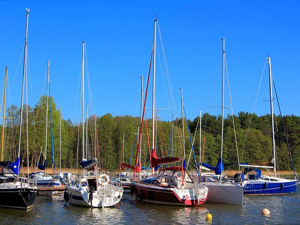

4 min czytania
Co zabrać na rejs żeglarski na Mazurach? Praktyczny poradnik
Przestrzeń na pokładzie podczas rejsu żaglówką jest ograniczona. Jak to rozplanować, aby nie zabrać za ani dużo ani za mało? Sprawdź, co naprawdę mieć ze sobą na rejsie żeglarskim po Mazurach.

Ile miejsca na rzeczy masz na jachcie?
Zanim zaczniesz pakować, musisz wiedzieć jedno – na jachcie nie jest jak w hotelu. Przestrzeń pod pokładem jest ograniczona, dlatego twój bagaż nie może być duży, twardy ani nieporęczny.
Najbardziej sensownym sensownym “pojemnikiem” jest miękka torba sportowa lub worek żeglarski. Walizki na kółkach i sztywne plecaki turystyczne nie dają się zgiąć ani wepchnąć pod koje, więc lądują w przeszkadzającym miejscu. Torba powinna swobodnie mieścić się w schowku pod łóżkiem. Przyjmij, że masz do dyspozycji mniej więcej tyle, co na trzydniowy wyjazd w góry, nawet jeśli rejs trwa tydzień. Jedna miękka torba 40–60 litrów to właściwy wybór, niezależnie czy stawiamy na żaglówki czy motorówki. Powinna być spakowana tak, żeby rzeczy używane najczęściej były na wierzchu. Kurtka idzie na sam wierzch lub do osobnej siatki. Kosmetyczka trzyma się razem, nie rozrzucona po kieszeniach. Odzież składasz ciasno. Brzmi prosto, ale przy ograniczonej przestrzeni źle spakowana torba jest odczuwalna naprawdę każdego dnia.
Ubrania na żagle, czyli jak się nie zmylić pogodą na jeziorze
Pogoda na Mazurach może zmieniać się szybko i trzeba się na to nastawić. Rano może być chłodno i wietrznie, w południe słonecznie i gorąco, a wieczór zrobi się wyraźnie chłodniejszy. Dlatego działa tu najbardziej uniwersalna rada – ubieraj się warstwowo.To jest jedyna słuszna strategia, niezależnie od tego, czy wyjeżdżasz w czerwcu czy w sierpniu.
Podstawą jest kurtka wiatroszczelna z kapturem. Nie musi to być profesjonalny sztormiak żeglarski, wystarczy dobra kurtka turystyczna z membraną, która nie przepuszcza wiatru i deszczu. Ważne, żeby miała kaptur. Przydaje się. Warto też, żeby sięgała do połowy uda, bo przy siedzeniu na burcie nogi będą całe mokre. Kurtka bez kaptura na jachtach żaglowych to błąd, który człowiek popełnia zazwyczaj tylko raz. Do tego dochodzi polar lub grubsza bluza na chłodniejsze wieczory, kilka koszulek z krótkim i długim rękawem oraz wygodne spodnie. Krótkie spodenki przyda się mieć, bo w środku dnia, przy słońcu, jest naprawdę ciepło. Strój na jacht to nie jest osobna kategoria wymagająca specjalistycznej garderoby. Większość rzeczy, które masz w szafie, wystarczy, pod warunkiem że są wygodne, szybkoschnące i nie szkoda ich łatwo zamoczyć.
Buty to oddzielna sprawa. Na pokład wchodzisz wyłącznie w obuwiu z płaską, gumową podeszwą. Mokry pokład potrafi być bardzo śliski, więc sprawdzają się trampki z gumową podeszwą lub dostosowane buty żeglarskie. Klapki i japonki odkładasz na czas przystani i prysznica w porcie. Na pokładzie nie ma dla nich miejsca, jeśli dbasz o bezpieczeństwo swoje i innych.
Co wziąć na pokład lub do kabiny na noc?
W ramach czarteru jachtów zazwyczaj jest dostępna pościel, kołdra i poduszka. Mimo to wielu żeglarzy woli spać we własnym śpiworze. Powód jest prosty – śpiwór jest przewidywalny, wiesz na jaką temperaturę możesz być przygotowany z danym śpiworem. Na chłodniejsze noce, a te zdarzają się nawet w sierpniu, lekki śpiwór letni robi dużą różnicę. Zajmuje mało miejsca, a komfort nocny przekłada się bezpośrednio na to, jak czujesz się następnego dnia na pokładzie.
Czas na prysznic. Realnie patrząc, przez większość tygodnia kąpiesz się w portach, gdzie są łazienki. Dlatego warto mieć przy sobie klapki do portu i ręcznik szybkoschnący. Schnie w kilkanaście minut, nie pleśnieje w wilgotnej kabinie i nie zajmuje połowy torby tak jak bawełniany. Kosmetyki najlepiej spakować do jednej zwartej kosmetyczki, jak już wspominaliśmy. Nie chodzi tu o estetykę, a o to, żeby chwycić ją jedną ręką i wyjść w razie potrzeby. Do standardowych kosmetyków dołącz krem z wysokim filtrem, bo słońce odbijające się od wody jest intensywne. Przyda się też preparat na komary i inne owady. Wieczory na wodzie są piękne, ale owady są aktywne i potrafią skutecznie popsuć nastrój po zachodzie słońca.
Rzeczy, których zapomina się spakować na rejs żeglarski
Jeśli chodzi o dokumenty, na rejs żeglarski na Mazurach wystarczy dowód osobisty. Jeśli regularnie przyjmujesz leki, zabierz je z zapasem na cały pobyt plus kilka dni ekstra. Do tego podstawowe środki na ból i gorączkę oraz plastry. Apteczka na jachcie jest zapewniona przez czarter.
Inne rzeczy – telefon ładuje się na jachcie bez problemu, gniazda 12V lub 230V są standardem. Powerbank warto zabrać jako “zapas” – zwłaszcza wtedy, jeśli używasz telefonu do nawigacji lub robienia zdjęć. Aparat fotograficzny zabierz koniecznie w wodoodpornym pokrowcu lub z takim zabezpieczeniem, bo zachlapanie na pokładzie jest bardzo możliwe. Latarka czołowa to drobiazg, który waży sto gramów i potrafi uratować wieczór. Przy cumowaniu w porcie, szukaniu czegoś w schowku pod koją albo wyjściu w nocy na pokład, dwie wolne ręce są nieocenione. To jedna z tych rzeczy, które na co dzień wydają się zbędne, a na jachcie okazują się oczywistością.
Poniżej wrzucamy checklistę rzeczy, które warto mieć ze sobą. Powodzenia w pakowaniu!
Lista rzeczy do zabrania na żagle
Bagaż i nocleg
- miękka torba sportowa lub worek żeglarski (40–60 l)
- śpiwór letni
- ręcznik szybkoschnący
Ubrania
- kurtka wiatroszczelna z kapturem i membraną
- polar lub grubsza bluza
- koszulki z krótkim i długim rękawem (2–3 sztuki)
- spodnie lub leginsy (1–2 pary)
- krótkie spodenki
- bielizna na każdy dzień plus zapas
- buty na płaskiej gumowej podeszwie
- klapki do portu
- czapka z daszkiem
- okulary przeciwsłoneczne z polaryzacją
Higiena i zdrowie
- kosmetyczka z codziennymi kosmetykami
- krem z wysokim filtrem UV
- preparat na komary
- stałe leki z zapasem
- tabletki na kinetozę (jeśli potrzebujesz)
- plastry i środek odkażający
Elektronika i drobiazgi
- powerbank
- latarka czołowa
- dowód osobisty
Czytaj dalej
- Bezpieczeństwo na jachcie – przegląd najważniejszych zasad Pełną odpowiedzialność za bezpieczeństwo jachtu, całej załogi i przestrzeganie przepisów żeglugowych ponosi kapitan. Niezależnie od tego, czy interesuje Cię czarter bez patentu, czy masz pełne uprawnienia na większe jednostki, każdy rejs po mazurskich jeziorach wymaga jednej osoby, która ma pełną kontrolę nad tym, co dzieje się na pokładzie i na wodzie.
- Szlak Wielkich Jezior Mazurskich – co warto o nim wiedzieć? Szlak Wielkich Jezior Mazurskich to system ponad dwudziestu jezior połączonych kanałami, po którym można żeglować cały tydzień bez powtarzania tej samej trasy. Jest dostępny zarówno dla jachtów żaglowych, jak i motorowych, a także dla większych jednostek pasażerskich kursujących w ramach żeglugi śródlądowej. To jeden z najbardziej rozbudowanych systemów wodnych w tej części Europy.
- Tygodniowy rejs po Mazurach – przykładowe trasy na 7 dni Tygodniowy rejs po Mazurach to dobry sposób, żeby zobaczyć różne oblicza regionu – od dużych portów i popularnych miejscowości po spokojne bindugi i dzikie zatoki. W ciągu 7 dni można wiele zobaczyć. Warto planować każdy dzień, biorąc pod uwagę warunki pogodowe, własne możliwości oraz ilość czasu, jaką chcemy spędzić żeglując.
Wybrałeś termin?
Sprawdź, które jachty są wolne, albo zadzwoń do biura.